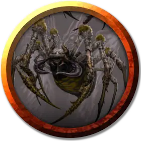

Король пауков
Spider King
Большой Зверь, без мировоззрения

Класс Доспеха 14 (природный доспех)
Хиты 44 (4к10 + 22)
Скорость 30 футов, лазая 30 футов
| мод | спас | ||
|---|---|---|---|
| СИЛ | 14 | +2 | +2 |
| ЛОВ | 16 | +3 | +3 |
| ТЕЛ | 12 | +1 | +3 |
| мод | спас | ||
|---|---|---|---|
| ИНТ | 2 | −4 | −4 |
| МДР | 11 | +0 | +2 |
| ХАР | 4 | −3 | −3 |
Навыки Восприятие +4, Скрытность +7
Чувства слепое зрение 10 футов, тёмное зрение 60 футов, пассивное Восприятие 14
Опасность 1 (200 опыта)
Бонус мастерства +2
Особенности
Паучье лазанье. Паук может лазать по сложным поверхностям, включая потолки, без совершения проверок характеристик.
Чувство паутины. Находясь в контакте с паутиной, паук знает точное местоположение всех существ, находящихся в контакте с этой же паутиной.
Хождение по паутине. Паук игнорирует ограничения перемещения, вызванные паутиной.
Двухголовый. Из-за своих двух голов, Король Пауков имеет преимущество на проверки Мудрости (Восприятие) и спасброски против состояний ослепления, очарования, испуга, глухоты, ошеломления и потери сознания.
Действия
Укус. Рукопашная атака оружием: +5 к попаданию, досягаемость 5 футов, одно существо. Попадание: 7 (1к8 + 3) колющего урона, и цель должна совершить спасбросок Телосложения Сл 11, получая 9 (2к8) урона ядом при провале, или половину этого урона при успехе. Если урон ядом уменьшает хиты цели до 0, цель остается стабилизированной, но отравленной на 1 час, и парализованной, пока отравлена этим ядом.
Паутина (перезарядка 5–6). Дальнобойная атака оружием: +5 к попаданию, дистанция 30 футов/60 футов, одно существо. Попадание: Цель становится опутанной паутиной. Опутанная цель может действием совершить проверку Силы Сл 12, разрывая паутину при успехе. Паутину можно атаковать и уничтожить (КД 10; хиты 5; уязвимость к урону огнём; иммунитет к дробящему урону, урону ядом и урону психической энергией).
Описание
При охоте на добычу гигантский паук плетет хитрые полотнища из паутины и стреляет липкими нитями из желез, расположенных внизу брюшка. Гигантские пауки чаще всего встречаются под землей, в логовах под потолком или в темных, заполненных паутиной трещинах. В таких логовах часто находятся коконы с предыдущими жертвами.